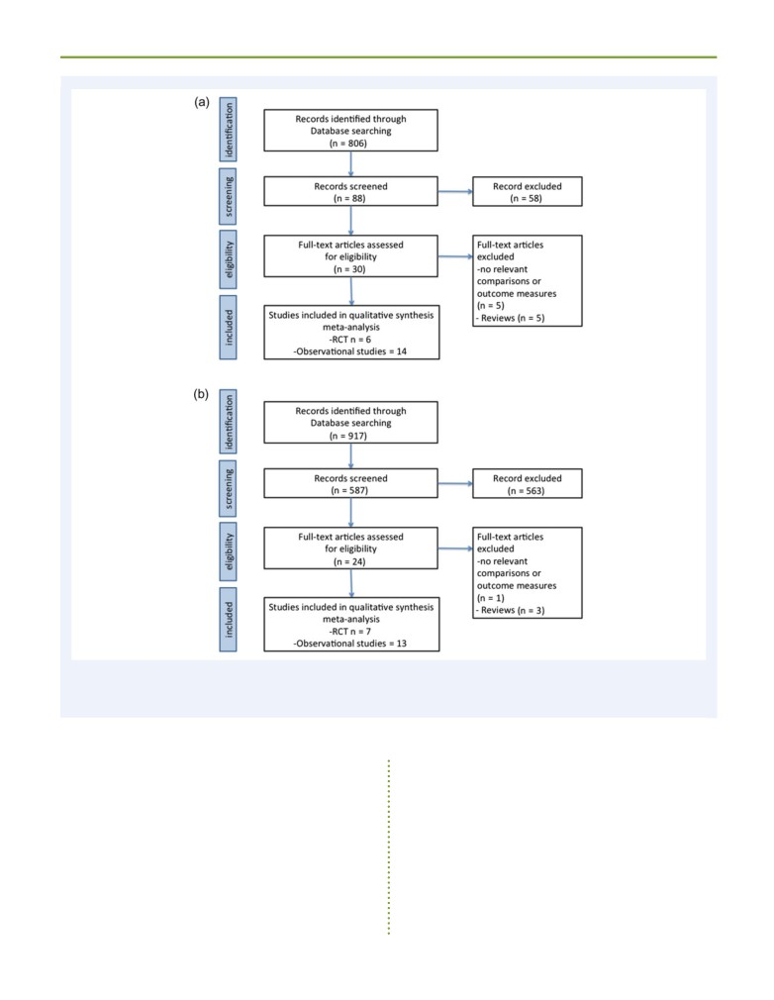
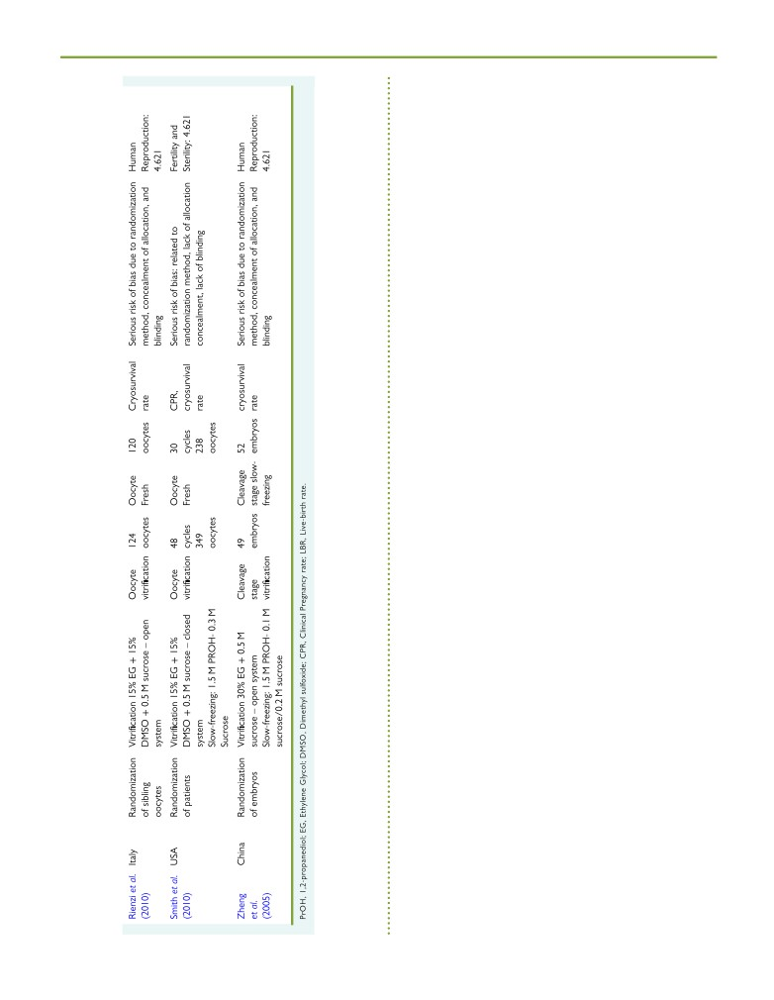
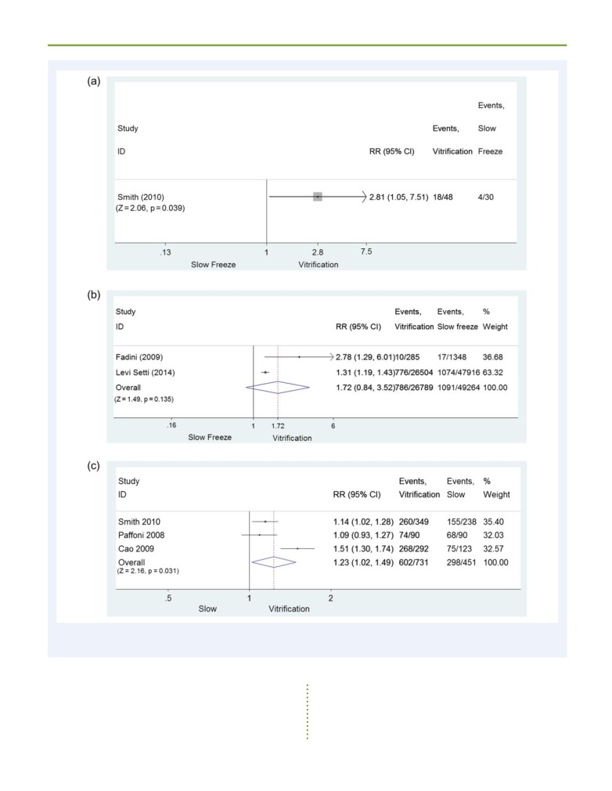
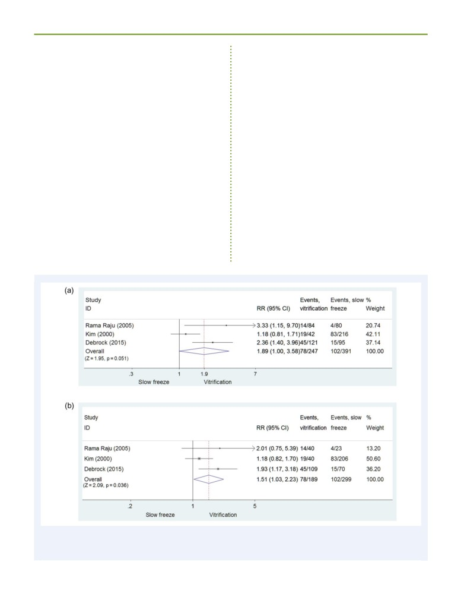
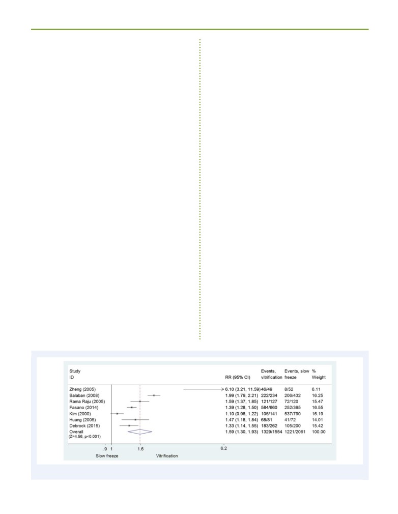

Human Reproduction Update, Vol.23, No.2 pp. 139-155, 2017
Advanced Access publication on November 4, 2016
doi:10.1093/humupd/dmw038
Oocyte, embryo and blastocyst
cryopreservation in ART: systematic
review and meta-analysis comparing
slow-freezing versus vitrification to
produce evidence for the development
of global guidance
Laura Rienzi1,*, Clarisa Gracia2, Roberta Maggiulli1,
Andrew R. LaBarbera3, Daniel J. Kaser4, Filippo M. Ubaldi1,
Sheryl Vanderpoel5,6, and Catherine Racowsky4
1GENERA Centre for Reproductive Medicine, Clinica Valle Giulia, via de Notaris 2b, Rome, Italy2Division of Reproductive Endocrinology
and Infertility, Department of Obstetrics and Gynecology, University of Pennsylvania, Philadelphia, PA, USA3American Society for
Reproductive Medicine, Birmingham, Alabama 35216, USA4Department of Obstetrics and Gynecology, Brigham and Women’s Hospital,
Harvard Medical School, Boston, MA 02115, USA5HRP (the UNDP/UNFPA/UNICEF/WHO/World Bank Special Programme of
Research, Development and Research Training in Human Reproduction), Geneva, Switzerland (at the time of the study)6Population
Council, Reproductive Health Programme, New York, USA
*Correspondence address. E-mail: rienzi@generaroma.it
Submitted on June 2, 2016; resubmitted on September 15, 2016; editorial decision on October 10, 2016; accepted on October 14, 2016
TABLE OF CONTENTS
• Introduction
• Methods
Oocyte cryopreservation: study eligibility criteria
Oocyte cryopreservation: study search methods
Oocyte cryopreservation: study descriptions
Embryo cryopreservation: study eligibility criteria
Embryo cryopreservation: study search methods
Embryo cryopreservation: study descriptions
Assessing the quality of each study
Data synthesis and meta-analysis
Assessment of the quality of the literature as a whole
• Results
Oocyte slow-freezing versus vitrification: clinical outcomes and oocyte cryosurvival
Oocyte slow-freezing versus fresh oocytes: clinical outcomes
Oocyte vitrification versus fresh oocytes: clinical outcomes
Embryo slow-freezing versus vitrification
• Discussion
Contribution of cryopreservation to the cumulative LBR
Embryo transfer policy and cryopreservation
© The Author 2016. Published by Oxford University Press on behalf of the European Society of Human Reproduction and Embryology.
This is an Open Access article distributed under the terms of the Creative Commons Attribution Non-Commercial License (http://creativecommons.org/
licenses/by-nc/4.0/), which permits non-commercial re-use, distribution, and reproduction in any medium, provided the original work is properly cited.
For commercial re-use, please contact journals.permissions@oup.com
140
Rienzi et al.
IVF cycle segmentation
Cryopreservation and enhanced embryo evaluation
New possibilities related to oocyte cryopreservation
Standardization of protocols and automation
Obstetric and perinatal outcomes
• Conclusions
BACKGROUND: Successful cryopreservation of oocytes and embryos is essential not only to maximize the safety and efficacy of ovarian
stimulation cycles in an IVF treatment, but also to enable fertility preservation. Two cryopreservation methods are routinely used: slow-
freezing or vitrification. Slow-freezing allows for freezing to occur at a sufficiently slow rate to permit adequate cellular dehydration while
minimizing intracellular ice formation. Vitrification allows the solidification of the cell(s) and of the extracellular milieu into a glass-like state
without the formation of ice.
OBJECTIVE AND RATIONALE: The objective of our study was to provide a systematic review and meta-analysis of clinical outcomes
following slow-freezing/thawing versus vitrification/warming of oocytes and embryos and to inform the development of World Health
Organization guidance on the most effective cryopreservation method.
SEARCH METHODS: A Medline search was performed from 1966 to 1 August 2016 using the following search terms: (Oocyte(s) [tiab]
OR (Pronuclear[tiab] OR Embryo[tiab] OR Blastocyst[tiab]) AND (vitrification[tiab] OR freezing[tiab] OR freeze[tiab]) AND (pregnancy
[tiab] OR birth[tiab] OR clinical[tiab]). Queries were limited to those involving humans. RCTs and cohort studies that were published in
full-length were considered eligible. Each reference was reviewed for relevance and only primary evidence and relevant articles from the
bibliographies of included articles were considered. References were included if they reported cryosurvival rate, clinical pregnancy rate
(CPR), live-birth rate (LBR) or delivery rate for slow-frozen or vitrified human oocytes or embryos. A meta-analysis was performed using a
random effects model to calculate relative risk ratios (RR) and 95% CI.
OUTCOMES: One RCT study comparing slow-freezing versus vitrification of oocytes was included. Vitrification was associated with
increased ongoing CPR per cycle (RR = 2.81, 95% CI: 1.05-7.51; P = 0.039; 48 and 30 cycles, respectively, per transfer (RR = 1.81, 95%
CI 0.71-4.67; P = 0.214; 47 and 19 transfers) and per warmed/thawed oocyte (RR = 1.14, 95% CI: 1.02-1.28; P = 0.018; 260 and 238
oocytes). One RCT comparing vitrification versus fresh oocytes was analysed. In vitrification and fresh cycles, respectively, no evidence for
a difference in ongoing CPR per randomized woman (RR = 1.03, 95% CI: 0.87-1.21; P = 0.744, 300 women in each group), per cycle
(RR = 1.01, 95% CI: 0.86-1.18; P = 0.934; 267 versus 259 cycles) and per oocyte utilized (RR = 1.02, 95% CI: 0.82-1.26; P = 0.873;
3286 versus 3185 oocytes) was reported. Findings were consistent with relevant cohort studies.
Of the seven RCTs on embryo cryopreservation identified, three met the inclusion criteria (638 warming/thawing cycles at cleavage and
blastocyst stage), none of which involved pronuclear-stage embryos. A higher CPR per cycle was noted with embryo vitrification compared
with slow-freezing, though this was of borderline statistical significance (RR = 1.89, 95% CI: 1.00-3.59; P = 0.051; three RCTs; I2 =
71.9%). LBR per cycle was reported by one RCT performed with cleavage-stage embryos and was higher for vitrification (RR = 2.28; 95%
CI: 1.17-4.44; P =
0.016; 216 cycles; one RCT). A secondary analysis was performed focusing on embryo cryosurvival rate. Pooled data
from seven RCTs (3615 embryos) revealed a significant improvement in embryo cryosurvival following vitrification as compared with slow-
freezing (RR = 1.59, 95% CI: 1.30-1.93; P < 0.001; I2 = 93%).
WIDER IMPLICATIONS: Data from available RCTs suggest that vitrification/warming is superior to slow-freezing/thawing with regard
to clinical outcomes (low quality of the evidence) and cryosurvival rates (moderate quality of the evidence) for oocytes, cleavage-stage
embryos and blastocysts. The results were confirmed by cohort studies. The improvements obtained with the introduction of vitrification
have several important clinical implications in ART. Based on this evidence, in particular regarding cryosurvival rates, laboratories that con-
tinue to use slow-freezing should consider transitioning to the use of vitrification for cryopreservation.
Key words: cryopreservation / vitrification / slow freezing / oocyte / embryo / blastocyst / World Health Organization
countries, such as Switzerland, Finland, Netherlands, Sweden and
Introduction
Iceland, the proportion of cryopreserved embryo transfers is higher
Cryopreservation of gametes and embryos is an essential aspect of
than
50% (Kupka et al., 2016). The observed differences among
ART. Its widespread application has allowed increased safety and effi-
European countries are mainly due to policies requiring lower trans-
cacy of IVF treatments. The proportion of cryopreserved embryo
fer order which, in turn, have led to more supernumerary embryos
transfer cycles compared with fresh cycles is growing in Europe.
available for cryopreservation
(Coetsier and Dhont,
1998). The
Overall it has been estimated that cryopreserved cycles contributed
recent systematic application of cryopreservation for new indications
to 32% of the transfers in 2011 compared to 28% in 2010. In some
such as cycle segmentation (i.e. planned freeze all) (Devroey et al., 2011),
Slow-freezing versus vitrification in ART
141
oocyte banking (Cobo et al.,
2011a,2012) and pre-implantation
of other cryoprotectants such as glycerol have been investigated for
genetic testing at the blastocyst stage (Schoolcraft et al., 2011) likely
cryopreservation of oocytes, biopsied embryos and blastocysts (Cohen
will contribute, in our opinion, to a further increase in the proportion
et al., 1985; Fabbri et al., 2001; Jericho et al., 2003; Veeck et al., 2004).
of cryopreserved cycles in the near future.
Detailed analysis of biological principles and development of various
Embryo cryopreservation has, however, generated ethical, moral
slow-freezing procedures have been described previously (Leibo and
and legal issues. Some countries have enacted specific laws that
Songstaken, 2002).
restrict (e.g. Germany, Switzerland, Austria) or even forbid (Italy with
In contrast to slow-freezing, vitrification is a cryopreservation
Law 40 in 2004) embryo cryopreservation. As an alternative and in
method that allows solidification of the cell(s) and the extracellular
accordance with the legal prohibition of embryo cryopreservation,
milieu into a glass-like state without the formation of ice. The most
oocyte cryopreservation had been introduced into routine practice in
widely used vitrification method for mammalian embryos requires the
Italy
(La Sala et al.,
2006; Borini et al.,
2006a,b, 2007; Levi Setti,
use of high initial concentrations of cryoprotectants, low volumes and
2006; De Santis et al., 2007; Ubaldi et al., 2010). Not until 2009 did
ultra-rapid cooling-warming rates. This approach was first introduced
the Italian Constitutional Court (151/2009) declare the constitution-
in human embryology for cleavage-stage embryos (Mukaida et al.,
ality of embryo cryopreservation. Nevertheless, some couples are
1998) and then for oocytes (Kuleshova et al., 1999) and pronuclear-
concerned about the disposition of cryopreserved embryos
stage embryos
(Jelinkova et al.,
2002; Selman and El-Danasouri,
(Nachtigall et al., 2010) and therefore prefer to limit the number of
2002). In the last 15 years several vitrification protocols have been
oocytes inseminated, with cryopreservation of the remainder (Heng,
described, which differ from one another in the type of cryoprotec-
2007). Oocyte cryopreservation also has emerged as an important
tants (Ethylene glycol [EG] and/or DMSO and/or PROH and sucrose
method for female fertility preservation for both medical and non-
and/or Ficoll and/or Trehalose), equilibration and dilution para-
medical indications (reviewed in De Vos et al., 2014 and Stoop et al.,
meters, the carrier tools and the cooling, storage and warming meth-
2014).
ods
(reviewed in Vajta and Nagy,
2006). To date the most
Since the first pregnancy and delivery with cryopreserved embryos
commonly used protocol for both oocyte and embryo vitrification
(Trounson and Mohr, 1983; Zeilmaker et al., 1984), various protocols
involves the combination of 15% DMSO, 15% EG and 0.5 M sucrose
have been introduced that differ from each other regarding the type
in a minimum volume (≤1 µl) (Kuwayama et al., 2005a,b). Other fun-
and concentration of cryoprotectants, equilibration timing, cooling
damental aspects of the technique are related to the cooling and
rates and cryopreservation devices used. Two principal approaches for
storing method. At present most embryos and oocytes are vitrified
cryopreservation have been adopted: slow-freezing and vitrification
by exposing the sample to direct contact with liquid nitrogen (open
(reviewed by Edgar and Gook, 2012).
system) to increase the cooling/warming rates and thus the efficiency
Slow-freezing allows for cryopreservation to occur at a sufficiently
of the procedure (Vajta et al., 2015). The ability to survive vitrification
slow rate to permit adequate cellular dehydration while minimizing
is in fact strictly dependent on the degree of cellular dehydration and
intracellular ice formation. The first successful protocol applied in
on the rate of warming, rather than on the type and concentration of
1972 for mammalian embryo cryopreservation required a cooling
cryoprotectants used (Jin and Mazur, 2015). High cryosurvival rates
rate of
~1°C/min to −70°C (Whittingham et al., 1972). Embryo
of mouse oocytes and embryos have been recently obtained with the
cooling performed this way is referred to as equilibrium freezing
use of only non-permeating cryoprotectant and a relatively slow cool-
(Mazur, 1990). Subsequently, slow-rate cooling was only applied to
ing rate, but combined with an ultra-rapid warming (Jin and Mazur,
around −30°C (Willadsen, 1977). With this approach, intracellular
2015). This study also demonstrates that the osmotic withdrawal of a
water content was converted into small intracellular ice crystals or
very large proportion of intracellular water prior to cooling, and not
into a glass. To avoid extensive crystallization, a very rapid warming
the permeation of cryoprotectant in the cell, is the key for a success-
was required.
ful vitrification (Jin and Mazur, 2015).
Although the first pregnancies with human cleavage-stage embryos
To avoid potential contamination during open system vitrification,
were obtained with the use of dimethylsulphoxide (DMSO) as the
sterile liquid nitrogen can be used (Vajta et al., 1998; Parmegiani et al.,
cryoprotectant
(Trounson and Mohr, 1983 and Zeilmaker et al.,
2009). Alternatively, specific devices have been designed to avoid dir-
1984) this approach was rapidly replaced.
ect contact of the samples with the nitrogen either during vitrification
For nearly 20 years the protocol combining 1.5 M propylene glycol
(closed system) and/or during storage (Vajta et al., 1998; Kuleshova
(PROH) plus 0.1 M sucrose, as the permeable and non-permeable
and Shaw 2000; Isachenko et al., 2006; Vanderzwalmen et al., 2009;
cryoprotectants, respectively, has been the most widely used (Lassalle
Abdelhafez et al., 2011; Parmegiani, 2011). Of note, not all closed sys-
et al., 1985; Testart et al., 1986). The freezing curve adopted requires
tems available on the market are completely free of any possible
the use of a programmable freezing machine designed to provide
sources of contamination (Vajta et al., 2015). On the other hand, a
accurate and consistent cooling parameters. Briefly, the sample is
lower degree of cooling/warming rate is generally associated with the
exposed to a relatively rapid cooling rate of 2°C/min to around −7°C
use of these systems. To date, neither open nor closed systems have
followed by a manual seeding to induce ice crystal formation in the
resulted in disease transmission during vitrification. However, to ensure
solution. Then, a consistent slow cooling rate of 0.3-1.0°C/min is
biosafety during cryopreservation, the use of sterile approaches is
applied before the freezing device is plunged into liquid nitrogen after
recommended (Argyle et al., 2016), providing that adequate cooling
having reached temperatures around
−40
to
−70°C using the
and, particularly, warming rates are still guaranteed.
approach of Trounson and Mohr (1983) or Lassale et al., (1985),
The objective of the present study was to compare slow-freezing/
respectively. Modifications to the concentration of sucrose and the use
thawing versus vitrification/warming for cryopreservation of oocytes,
142
Rienzi et al.
embryos and blastocysts. RCTs and relevant observational cohort
A secondary analysis was performed focusing on oocyte cryosurvival
studies were included in this systematic review and meta-analysis.
rate. One RCT (Smith et al., 2010), two RCTs where sibling oocytes
This study was performed to support a prioritized clinical question
were randomized, rather than patients, (Paffoni et al., 2008; Cao et al.,
2009) and three cohort studies (Fadini et al., 2009; Grifo and Noyes,
and to provide a review of the evidence for debate and discussion
2010; Levi Setti et al., 2016) were included.
during the consultation for the development of the World Health
Organization (WHO) global guidelines: ‘Addressing evidence-based
Slow-frozen versus fresh oocytes: clinical outcomes
guidance on infertility diagnosis, management and treatment.’
No RCTs were identified comparing outcomes following transfer of
embryos from oocytes that were either slow-frozen or fresh. Five cohort
studies were identified comparing outcomes following transfer of
Methods
embryos derived from fresh or slow-frozen/thawed oocytes (Chamayou
et al., 2006; Levi Setti et al., 2006; Borini et al., 2007; Borini et al., 2010;
Oocyte cryopreservation: study eligibility
Virant-Klun et al., 2011).
criteria
RCTs and well-designed cohort or case-control studies were included
Vitrified versus fresh oocytes: clinical outcomes
that compared outcomes following slow-freeze versus vitrification of
One RCT was identified that randomized 600 donor recipients to trans-
mature i.e. metaphase II (MII) oocytes from women undergoing ART.
fer of embryos either from fresh or vitrified/warmed oocytes (Cobo
Given the paucity of studies making direct comparisons between the two
et al.,
2010). Characteristics of this study are described in Table I.
cryopreservation methods, studies comparing slow-freeze or vitrification
Ongoing clinical pregnancy at 10-11 weeks of gestation was reported;
to fresh oocytes (control group) were also included. Only trials reported
however, live-birth data were not reported.
in peer-reviewed full publications involving MII oocyte cryopreservation
Thirteen other studies were identified: five randomized sibling oocytes,
were included; abstracts were excluded. Data from these studies were
rather than patients, to vitrification versus fresh treatments (Cobo et al.,
used to assess the following outcomes: Clinical pregnancy rate (CPR),
2008; Rienzi et al.,
2010; Parmegiani et al.,
2011; Siano et al.,
2013;
live-birth rate (LBR) and oocyte cryosurvival rate when reported.
Forman et al., 2012), and eight cohort studies (Antinori et al., 2007; Nagy
et al., 2009; Almodin et al., 2010; Ubaldi et al., 2010; Garcia et al., 2011;
Trokoudes et al., 2011; Sole et al., 2013; Doyle et al., 2016). Three sibling
Oocyte cryopreservation: study search
oocyte RCTs (Cobo et al., 2008; Siano et al., 2013; Forman et al., 2012)
methods
and two cohort studies (Nagy et al., 2009 and Doyle et al., 2016) were
excluded from analysis due to study design (Forman et al., 2012) or data
The searches for relevant studies were last performed and completed on 1
reporting issues (Cobo et al., 2008; Nagy et al., 2009; Siano et al., 2013;
August 2016 by two review authors (AL, RM) using the following search
Doyle et al., 2016).
terms:
(oocyte(s)
[tiab]) AND (vitrification[tiab] OR freezing[tiab] OR
The remaining eight studies were grouped together for comparison of
freeze[tiab]) AND (embryo quality[tiab] OR survival[tiab] OR pregnancy
clinical outcomes following transfer of embryos arising from oocytes that
[tiab] OR birth[tiab]). The search was limited to human studies. Articles
were exclusively either vitrified or fresh. Five meta-analyses (Oktay et al.,
were also identified via snowball sampling by hand-searching references
2006; Cobo et al., 2011b; Cil et al., 2013; Glujovsky et al., 2014; Potdar
from systematic reviews. The search returned 806 records, of which 88
et al., 2014) focusing on oocyte cryopreservation were reviewed.
were screened manually for relevance. The information about potentially
eligible studies was reported in a table describing the characteristics of the
studies for assessing the reliability of the results. Full texts of potentially eli-
Embryo cryopreservation: study eligibility
gible studies were obtained and examined independently by the two differ-
ent authors; disagreements as to study eligibility were resolved by
criteria
discussion (all authors). A total of 20 references were included (Fig. 1a).
RCTs and observational cohort studies were included that compared
slow-freeze to vitrification of pronuclear embryos, cleavage-stage
embryos or blastocysts from women undergoing ART. Only trials
Oocyte cryopreservation: study descriptions
reported in peer-reviewed full publications were included; abstracts were
excluded. The following outcomes were assessed: CPR, LBR and embryo
Slow-frozen versus vitrified oocytes: clinical outcomes and
cryosurvival rate, when reported.
cryosurvival
One RCT was identified that randomized women to have an embryo
transfer from MII oocytes that were either slow-frozen or vitrified (Smith
Embryo cryopreservation: study search
et al., 2010). Characteristics of this study are described in Table I. A total
methods
of 230 patients with more than nine MII oocytes retrieved were allocated
by random number generator to either slow-freezing or vitrification. This
The searches for relevant studies were last performed and completed on
results in 30 cases of oocyte thawing and 48 cases of warming (average
August first 2016 using the following search terms: (Pronuclear[tiab] OR
ages at oocyte retrieval: 32 ± 1 and 31 ± 1 years (mean + SD), respect-
Embryo[tiab] OR Blastocyst[tiab]) AND (vitrification[tiab] OR freezing
ively). LBRs were not reported. Ongoing CPRs were reported but not
[tiab] OR freeze[tiab]) AND (pregnancy[tiab] OR birth[tiab] OR clinical
defined by minimum gestational age.
[tiab]). The search was limited to human studies. Articles were also iden-
Two cohort studies were identified that compared CPRs from slow-
tified by hand searching references from systematic reviews. The search
frozen versus vitrified autologous oocytes (Fadini et al., 2009; Levi Setti
returned 917 records, of which 587 were screened manually for rele-
et al., 2014). Oocyte cryopreservation was performed in these studies in
vance. Full texts of potentially eligible studies were obtained and exam-
an unselected population of infertile patients due to law restrictions (Law
ined independently by two different authors (RM, DK); disagreements as
40, 2004, Italy).
to study eligibility were resolved by discussion (all Authors). A total of 20

Slow-freezing versus vitrification in ART
143
Figure 1 Flow charts for a systematic review and meta-analysis comparing slow-freezing versus vitrification of oocytes, embryos and blastocysts in
ART. (a) search for relevant studies for oocytes slow-freezing and vitrification (b) search for relevant studies for pronuclear, cleavage-stage embryo
and blastocyst slow-freezing and vitrification.
studies were included for this analysis, comparing outcomes following
clinical outcomes were incomplete. Moreover, a meta-analysis (AbdelHafez
transfer of vitrified versus slow-frozen embryos (Fig. 1b).
et al.,
2010) focusing on clinical outcomes was reviewed. None of the
included studies compared cryopreservation techniques at the pronuclear-
stage. Two of the included RCTs were performed at the cleavage-stage
(Rama Raju et al., 2005; Debrock et al., 2015) and one at blastocyst stage
Embryo cryopreservation: study descriptions
(Kim et al., 2000). The primary outcome measures chosen were CPR
Vitrified versus slow-frozen embryos: clinical outcomes
and LBRs.
Only one well-designed RCT comparing clinical outcomes following vitrifica-
Eleven observational studies reporting clinical pregnancy per cycle
tion versus slow-freezing between randomized women rather than embryos
and/or per transfer of embryos at different stages of development were
was identified (Debrock et al., 2015). Two RCTs (Rama Raju et al., 2005
pooled and analyzed (Kuwayama et al., 2005a,b; Stehilk et al., 2005;
and Kim et al., 2000) comparing clinical outcomes between randomized
Liebermann and Tucker, 2006; Rezazadeh Valojerdi et al., 2009; Wilding
embryos were also included. Characteristics of these studies are described
et al., 2010; Sifer et al., 2012; Wang et al., 2012; Van Landuyt et al., 2013
in Table I. One additional RCT (Bernal et al., 2008) was excluded because
and Liu et al.,
2013; Zhu et al.,
2015; Kaartinen et al.,
2016). An
Table I Characteristics of the included RCTs comparing reproductive outcomes of slow-freezing versus vitrification.
Authors
Location Study design Cryopreservation protocols
Study
N°
Control N°
Outcomes Risk of bias
Journal: Impact
(year)
group
group
factor
Balaban
Turkey
Randomization
Vitrification 16%PrOH + 16%
Cleavage
234
Cleavage
232
cryosurvival
Serious risk of bias due to randomization
Human
et al.
of embryos
EG + 0.65 M sucrose + 10 mg/ml
stage
embryos
stage slow-
embryos
rate,
method, concealment of allocation,
Reproduction:
(2008)
Ficoll- open system
vitrification
freezing
blastocyct
blinding
4.621
Slow-freezing: 1.5 M PROH-0.1 M
formation
Sucrose
Cao et al.
China
Randomization
Vitrification 15% EG + 15%
Oocyte
292
Oocyte
123
cryosurvival
Serious risk of bias due to randomization
Seminars in
(2009)
of sibling
PROH + 0.5 M sucrose - open
vitrificaiton
oocytes
slow-
oocytes
rate
method, concealment of allocation,
Reproductive
oocytes
system
freezing
blinding
Medicine: 2.113
Slow-freezing: 1.5 M
PROH + 0.3 M sucrose
Cobo et al.
Spain
Randomization
Vitrification 15% EG + 15%
Oocyte
295
Oocyte
289
CPR,
No serious risk of bias
Human
(2010)
of patients
DMSO + 0.5 M sucrose - open
vitrification
cycles
fresh
cycles
cryosurvival
Reproduction:
system
rate
4.621
Debrock
Belgium
Randomization
Vitrification 15% EG + 15%
Cleavage
121
Cleavage
85
CPR, LBR,
No serious risk of bias
Human
et al.
of patients
DMSO + 0.5 M sucrose - closed
stage
cycles
stage slow-
cycles
cryosurvival
Reproduction:
(2015)
system
vitrification
freezing
200
rate
4.621
Slow-freezing: 1.5 M PROH −
217
embryos
0.1 M Sucrose
embryos
Fasano
Belgium
Randomization
Vitrification 20% EG + 15%
Cleavage
516
Cleavage
260
CPR, LBR,
Serious risk of bias due to randomization
Journal of Assisted
et al.
of embryos
DMSO + 0.5 M sucrose - closed
stage
cycles
stage slow-
cycles
cryosurvival
method, concealment of allocation, and
Reproduction and
(2014)
system
vitrification
660
freezing
395
rate
blinding
Genetics: 1.772
Slow-freezing: 1.5 M PROH −
embryos
embryos
0.1 M Sucrose
Huang
Taiwan
Randomization
Vitrification 20% EG + 20%
Blastocyst
81
Blastocyst
72
cryosurvial
Serious risk of bias due to randomization
Human
et al.
of embryos
DMSO and 0.5 M sucrose - open
vitrification
embryos
slow-
embryos
rate
method, concealment of allocation,
Reproduction:
(2005)
system
freezing
blinding
4.621
Slow-freezing: 5% glycerol + 9%
glycerol 0.2 M sucrose
Kim et al.
USA
Randomization
Vitrification 5.5 M EG + 1 M
Blastocyst
42
Blastocyst
216
CPR,
Unclear risk of bias related to random
Fertility and
(2000)
of embryos
sucrose
vitrification
cycles
slow-
cycles
cryosurvival
sequence generation, allocation of
Sterility: 4.426
Slow freezing: 5% glycerol and 9%
141
freezing
790
rate
concealment acceptable, and blinding
glycerol + 0.2 M sucrose
embryos
embryos
Paffoni
Italy
Randomization
Vitrification 15% DMSO, 15% EG,
Oocyte
90
Oocyte
90
Cryosurvival
Serious risk of bias due to randomization
Reproductive
et al.
of sibling
and 0.5 M sucrose - closed
vitrification
oocytes
slow-
oocytes
rate
method, concealment of allocation,
Sciences: 2.429
(2008)
oocytes
system
freezing
blinding
Slow freezing: 1.5 mol/L PROH
and 0.3 mol/L sucrose
Parmegiani
Italy
Randomization
Vitrification 15% EG + 15%
Oocyte
168
Oocyte
120
Cryosurvival
Serious risk of bias due to randomization
RBM online:2.796
et al.
of sibling
DMSO + 0.5 M sucrose - open
vitrification
oocytes
Fresh
oocytes
rate
method, concealment of allocation, and
(2011)
oocytes
system
blinding
Rama Raju
India
Randomization
Vitrification 40% EG + 0.6 M
Cleavage
84
Cleavage
80
CPR,
Unclear risk of bias related to random
RBM online:2.796
et al.
of embryos
sucrose - open system
stage
cycles
stage slow-
cycles
cryosurvival
sequence generation, allocation of
(2005)
Slow-freezing: 1.5 M PROH- 0.1 M
vitrification
127
freezing
120
rate
concealment acceptable, and blinding
Sucrose
embryos
embryos

Slow-freezing versus vitrification in ART
145
additional two studies described by the authors as RCT’s were not truly
randomized studies and were therefore included in the analysis with
observational studies (Li et al., 2007 and Summers et al., 2016).
LBR per cycle and/or per transfer was reported in six studies
(Kuwayama et al., 2005a,b; Wilding et al., 2010; Wang et al., 2012; Liu
et al., 2013; Van Landuyt et al., 2013; Kaartinen et al., 2016).
Slow-frozen versus vitrified embryos: survival
A secondary analysis was performed focusing on embryo cryosurvival
rate. Seven RCTs (Kim et al., 2000; Huang et al., 2005; Rama Raju et al.,
2005; Zheng et al.,
2005; Balaban et al.,
2008; Fasano et al.,
2014;
Debrock et al.,2015) were included. Characteristics of these studies are
described in Table I. Moreover,
12 observational studies
(Kuwayama
et al.,
2005a,b; Stehilk et al.,
2005; Liebermann and Tucker, 2006; Li
et al., 2007; Rezazadeh Valojerdi et al., 2009; Wilding et al., 2010; Sifer
et al., 2012; Wang et al., 2012; Van Landuyt et al., 2013 and Liu et al.,
2013; Zhu et al., 2015; Summers et al., 2016) and two meta-analyses
comparing results obtained with vitrification/warming and slow-freezing/
thawing (Loutradi et al., 2008; Kolibianakis et al., 2009) were identified.
Assessing the quality of each study
According to the WHO Handbook for Guideline Development (WHO,
2012) the quality of each study was assessed. In particular, each RCT was
evaluated for the following factors: how randomization was performed,
whether there was concealment of allocation, whether participants and
personnel were blinded to the intervention and outcome, whether there
was complete data reporting, whether an intention to treat analysis was
performed and whether any other potential sources of bias existed
(WHO, 2012). The overall risk of bias was classified as serious, not ser-
ious, or unclear and is presented in Table I for each randomized trial
included. The risk of bias is considered serious for all observational stud-
ies given the high risk for selection bias and confounding inherent in these
study designs.
Data synthesis and meta-analysis
Meta-analyses of studies were undertaken to estimate the pooled relative
risk ratios (RR) of outcomes including CPR per cycle, CPR per transfer and
cryosurvival of thawed/warmed oocytes or embryos. Statistical analyses
and construction of forest and funnel plots were performed with Stata ver-
sion 12.1 (StataCorp, TX, USA). RR and 95% CIs were calculated for each
outcome. A random effects model was used for the meta-analysis.
Heterogeneity was assessed with the use of the I2 test. Publication bias
was assessed by constructing funnel plots.
Assessment of the quality of the literature as
a whole
According to the WHO Handbook for Guideline Development (WHO,
2012) used to guide methodology in this systematic review, the quality of
the literature for each analysis was classified as high, moderate, low or
very low. A grade of high indicates that further research is very unlikely
to change confidence in the estimate of effect; moderate indicates that
further research is likely to have an important impact on confidence in
the estimate of effect and may change the estimate; low indicates that
further research is very likely to have an important impact on confidence
in the estimate of effect and is likely to change the estimate; very low
indicates that any estimate of effect is very uncertain (WHO, 2012).
146
Rienzi et al.
Factors used to determine the classification for any analysis took into
2046 cycles; I2 = 0.0%, very low quality evidence), and lower LBRs
account the following factors: study design, consistency of the results
per utilized oocyte (RR = 0.26, 95% CI: 0.21-0.32; P < 0.0001; three
across the available studies, precision of the results (width of the CI), the
studies; 5513 and 6670 cycles; I2 = 0.0%, very low quality evidence)
directness or generalizability of the results across populations, and the
when slow-freeze was compared to fresh oocytes.
likelihood of publications bias.
The CPR per cycle (RR = 0.42, 95% CI: 0.31-0.58; P < 0.0001;
five studies,
1809
and
3323
cycles, slow-freezing versus fresh,
respectively; I2 = 64.5%, very low quality evidence) (Supplementary
Results
Fig. S1b), the CPR per transfer (RR = 0.45, 95% CI: 0.29-0.65, five
studies; P < 0.0001; 1534 and 2989 transfers; I2 = 78.5%, very low
Oocyte slow-freezing versus vitrification:
quality evidence) and the CPR per utilized oocytes (RR = 0.29, 95%
clinical outcomes and oocyte cryosurvival
CI: 0.25-0.35, four studies; 6600 and 9115 oocytes, slow-freezing
A single RCT (Smith et al., 2010) revealed evidence of a difference in
versus, fresh, respectively; P < 0.0001; I2 = 4.8%, very low quality
favor of vitrification regarding ongoing pregnancy rate per cycle
evidence) were all in favor of fresh oocytes as compared to slow-
(RR = 2.81, 95% CI: 1.05-7.51; P = 0.039; 48 and 30 cycles, vitrifica-
frozen oocytes (Chamayou et al., 2006; Levi Setti et al., 2006; Borini
tion versus slow-freezing, respectively; low quality evidence) (Fig. 2a)
et al., 2007,2010; Virant-Klun et al., 2011). Each utilized slow-frozen
and per warmed/thawed oocyte (RR = 1.14, 95% CI: 1.02-1.28;
oocyte had a 2.27% (150/6600) likelihood of resulting in a pregnancy
P = 0.018; 260 and 238 oocytes, vitrification versus slow-freezing,
in the population of women studied.
respectively; low quality evidence). Limited evidence demonstrated
that clinical outcomes following vitrification versus slow-freezing were
similar when ongoing pregnancy rate was expressed per embryo trans-
Oocyte vitrification versus fresh oocytes:
fer (RR = 1.81, 95% CI: 0.71-4.67; P = 0.214; 47 and 19 transfers, vit-
rification versus slow-freezing, respectively; low quality evidence).
clinical outcomes
In two cohort studies (Fadini et al., 2009; Levi Setti et al., 2014)
Analysis of a single RCT (Cobo et al., 2010) revealed no evidence for
the evidence also favored vitrification for CPR per cycle (RR = 1.72,
a difference in ongoing CPR between the two groups when results
95% CI: 0.74-3.95; P = 0.212; 5460 and 9212 cycles, vitrification ver-
were expressed per woman randomized (RR = 1.03, 95% CI: 0.87-
sus slow-freezing, respectively; I2 = 81.5%, very low quality evidence)
1.21; P = 0.744, 300 women in each group; moderate quality evi-
(Fig. 2b), per transfer (RR = 1.55, 95% CI: 0.82-2.92; P = 0.180, two
dence), per cycle (RR = 1.01, 95% CI: 0.86-1.18; P = 0.934; 267 ver-
studies; I2
= 70.0%, very low quality evidence) and per warmed/
sus 259 cycles vitrification versus fresh, respectively; moderate quality
thawed oocyte (RR = 1.72, 95% CI: 0.84-3.52; P = 0.135; 26789
evidence) or per utilized oocyte (RR = 1.02, 95% CI: 0.82-1.26;
and 49264 oocytes, vitrification versus slow-freezing, respectively;
P
= 0.873; 3286 versus 3185 oocytes, vitrification versus fresh,
very low quality evidence). However, the differences were not statis-
respectively; moderate quality evidence).
tically significant. Of note the CPR per cycle was relatively low in the
The combined analysis of the cohort studies and the RCTs in
unselected population of patients undergoing autologous oocyte
which sibling oocytes were randomized to be vitrified or used fresh
cryopreservation due to law restrictions for both approaches, 11.8%
(Sole et al., 2013; Parmegiani et al., 2011; Trokoudes et al., 2011)
and 14.4% for slow freezing and vitrification, respectively.
revealed no evidence of a difference between cycles using exclusively
The superiority of vitrification over slow-freezing was also observed
vitrified versus fresh oocytes for LBR per cycle (RR = 1.04, 95% CI:
when cryosurvival rates of MII oocytes were compared. In three RCTs
0.61-1.76, P = 0.892; three studies; 171 and 171 cycles, vitrification
(Paffoni et al., 2008; Cao et al., 2009; Smith et al., 2010) MII cryosurvi-
versus fresh, respectively; I2
= 52.3%; very low quality evidence)
val rate was
82.3% (602/731) following vitrification/warming and
66.1% (298/451) following slow-freezing/thawing (RR = 1.23, 95% CI:
0.29-19.3, P = 0.427; two studies; 378 and 367 oocytes, vitrification
1.02-1.49; P = 0.031; three studies; 1182 oocytes thawed; I2 = 82.9%,
versus fresh, respectively; I2
= 58.5%; very low quality evidence)
low quality evidence) (Fig. 2c). In the three cohort studies, cryosurvival
(Parmegiani et al., 2011; Trokoudes et al., 2011), or LBR per transfer
rate after vitrification was also significantly higher than after slow-
(RR = 1.10, 95% CI: 0.64-1.88, P = 0.730; three studies; 166 and
freezing (RR = 1.23, 95% CI: 1.11-1.36, P < 0.001; three studies;
170 transfers, vitrification versus fresh, respectively, I2 = 54.6%; very
99679 oocytes thawed; I2 = 91.6%, very low quality evidence) (Fadini
low quality evidence). The two groups were also similar for CPR per
et al., 2009; Levi-Setti et al., 2016; Grifo and Noyes, 2010).
cycle (RR = 0.94, 95% CI: 0.81-1.10; P = 0.457; eight studies; 526
and 892 cycles, vitrification versus fresh, respectively; I2
= 22.9%,
very low quality evidence) (Sole et al., 2013; Antinori et al., 2007;
Oocyte slow-freezing versus fresh oocytes:
Almodin et al., 2010; Rienzi et al., 2010; Ubaldi et al., 2010; Garcia
clinical outcomes
et al., 2011; Parmegiani et al., 2011; Trokoudes et al., 2011); CPR
Analyses of the cohort studies (Chamayou et al., 2006; Borini et al.,
per transfer (RR = 0.97, 95% CI: 0.81-1.16; P = 0.714; seven st-
2010; Virant-Klun et al., 2011) in which sibling oocytes were not ran-
udies,
477 and 754 transfers, vitrification versus fresh, respectively;
domized to be slow-frozen or used fresh revealed lower LBRs per
I2 = 38.1%, very low quality evidence) (Sole et al., 2013; Antinori et al.,
cycle with slow-freezing (RR = 0.49, 95% CI: 0.39-0.60; P < 0.0001;
2007; Almodin et al., 2010; Ubaldi et al., 2010; Garcia et al., 2011;
three studies; 990 and 2271 cycles; I2 = 0.0%, very low quality evi-
Parmegiani et al., 2011; Trokoudes et al., 2011); and CPR per oocyte
dence)
utilized (RR = 1.16, 95% CI: 0.57-2.69; P = 0.654; six studies; 1759
(RR = 0.55, 95% CI: 0.44-0.68; P < 0.0001; three studies; 799 and
and 3832 oocytes, vitrification versus fresh, respectively; I2 = 89.5%,

Slow-freezing versus vitrification in ART
147
Figure 2 Comparison of slow-freezing versus vitrification: oocytes. (a) Comparison based on CPR/cycle for oocytes: RCT; (b) Comparison based
on CPR/cycle for oocytes: cohort studies; (c) Comparison based on oocyte cryosurvival rate: RCTs. CPR, clinical pregnancy rate.
very low quality evidence) (Antinori et al., 2007; Almodin et al., 2010;
Embryo slow-freezing versus vitrification
Ubaldi et al.,
2010; Garcia et al.,
2011; Parmegiani et al.,
2011;
Slow-freezing versus vitrification: CPR
Trokoudes et al., 2011). Each utilized vitrified oocyte had an 8.36%
Given the limited number of RCTs available, results obtained in three
(147/1759) likelihood of resulting in a pregnancy in the population of
RCTs with slow-freezing/thawing versus vitrification/warming for
women studied.

148
Rienzi et al.
cleavage-stage embryos and blastocysts (Kim et al., 2000; Rama Raju
Li et al.,
2007; Rezazadeh Valojerdi et al., 2009; Wilding et al.,
et al., 2005; Debrock et al., 2015) were pooled. Overall, 638 warming/
2010; Sifer et al., 2012; Wang et al., 2012; Liu et al., 2013; Van
thawing cycles (vitrification: n
= 247; slow-freezing: n = 391) were
Landuyt et al., 2013; Zhu et al., 2015; Kaartinen et al., 2016), there
included. Data from pronuclear-stage warming cycles were not available.
was no statistically significant difference in CPR per cycle or CPR
A higher CPR per cycle was obtained with embryo vitrification com-
per transfer with vitrification compared with slow-freezing
pared with slow-freezing though this was of borderline statistical signifi-
(RR = 1.27, 95% CI: 1.00-1.55; P = 0.62; six observational stud-
cance (RR = 1.89, 95% CI: 1.00-3.58; P = 0.051, 638 cycles, three
ies;
7789
cycles; I2
= 78.8%, very low quality evidence and
RCTs; I2 = 71.9%, low quality evidence, Fig. 3a). However, a significant
RR = 1.05, 95% CI: 0.95-1.16; P = 0.33; 10 observational studies;
difference in favor of vitrification was observed when CPR per embryo
17448 embryo transfers; I2
= 67%; very low quality evidence,
transfer was calculated (RR = 1.51, 95% CI: 1.03-2.23; P =
0.036; 488
respectively).
embryo transfers; three RCTs; I2 = 35%, low quality evidence, Fig. 3b).
When restricting the analysis of observational studies to those
When pooling data from cohort studies (Kuwayama et al., 2005a,b;
including only blastocyst stage embryos (Kuwayama et al., 2005a,b;
Stehlik et al.,
2005; Liebermann and Tucker, 2006; Li et al., 2007;
Stehlik et al.,
2005; Liebermann and Tucker, 2006), there was no
Rezazadeh Valojerdi et al., 2009; Wilding et al., 2010; Sifer et al., 2012;
statistically significant difference in CPR per cycle or CPR per transfer
Wang et al., 2012; Liu et al., 2013; Van Landuyt et al., 2013; Zhu et al.,
with vitrification compared with slow-freezing (RR = 1.51, 95% CI:
2015; Kaartinen et al., 2016), there was a significantly higher CPR per
0.69-3.29; P = 0.31; two observational studies;
602 cycles; I2
=
78.8%, very low quality evidence and RR = 1.16, 95% CI: 0.89-1.50;
compared with slow-freezing
(RR
= 1.27,
95% CI:
1.05-1.55;
P = 0.27; three observational studies; 5437 embryo transfers; I2 =
P = 0.015; eight observational studies; 8391 cycles; I2 = 76.5%, very
61.8%; very low quality evidence, respectively).
low quality evidence and RR = 1.07, 95% CI: 0.98-1.16; P = 0.16; 12
observational studies; 22 885 embryo transfers; I2 = 64.7%; very low
Slow-freezing versus vitrification LBR
quality evidence, respectively).
The LBR per cycle and per transfer was reported in only one RCT
When restricting the analysis of observational studies to those
performed with embryos at the cleavage-stage
(Debrock et al.,
including only cleavage-stage embryos (Kuwayama et al., 2005a,b;
2015), with higher rates observed for vitrification (RR = 2.28; 95%
Figure 3 Comparison of slow-freezing versus vitrification: embryos. (a) Comparison of slow-freezing versus vitrification on CPR/cycle for
cleavage-stage embryos and blastocysts: RCTs; (b) Comparison of slow-freezing versus vitrification on CPR/embryo transfer for cleavage-stage
embryos and blastocysts: RCTs.

Slow-freezing versus vitrification in ART
149
CI:
1.17-4.44; P =
0.016; 216 cycles; low quality evidence and
When restricted to cryosurvival of only cleavage-stage embryos,
RR = 1.862 95% CI: 0.97-3.58; P =
0.062; 179 embryo transfers;
vitrification was superior to slow-freezing (RR = 1.74, 95% CI: 1.39-
low quality evidence, respectively).
2.18; 2531 embryos; P < 0.001; I2 = 92.2%; moderate quality evi-
Only three observational trials reported LBR per cycle
(Wilding
dence) (Rama Raju et al., 2005; Zheng et al., 2005; Balaban et al.,
et al.,
2010; Wang et al.,
2012; Van Landuyt et al.,
2013)
2008; Fasano et al., 2014; Debrock et al., 2015). Post-warming cryo-
survival rates of vitrified blastocysts were also higher than those
et al., 2005a,b; Wilding et al., 2010; Wang et al., 2012; Liu et al., 2013;
observed with slow-freezing, but did not reach statistical significance
Van Landuyt et al., 2013; Kaartinen et al., 2016). No differences were
(RR = 1.25: 95% CI: 0.93-1.67; P = 0.13; two RCTs; 1084 blasto-
observed between vitrification and slow-freezing (RR = 1.05, 95% CI:
cysts; I2 = 82.2%, moderate quality evidence).
0.67-1.65; P = 0.831; 1621 cycles; I2 = 74.8%; very low quality evi-
Twelve cohort studies (Kuwayama et al., 2005a,b; Stehlik et al., 2005;
dence and RR = 1.03, 95% CI: 0.91-1.18; P = 0.62; 14 996 embryo
Liebermann and Tucker, 2006; Li et al., 2007; Rezazadeh Valojerdi
transfers; I2 = 45.8%; very low quality evidence, respectively).
et al., 2009; Wilding et al., 2010; Sifer et al., 2012; Wang et al., 2012;
When restricting the analysis of observational studies to those
Liu et al., 2013; Van Landuyt et al., 2013; Zhu et al., 2015; Summers
including only cleavage-stage embryos (Kuwayama et al., 2005a,b; Li
et al., 2016) with 64 982 cryopreserved pronuclear stage, cleavage-stage
et al.,
2007; Rezazadeh Valojerdi et al., 2009; Wilding et al., 2010;
embryos or blastocysts were identified. The pooled data showed that
Sifer et al.,
2012; Wang et al., 2012; Liu et al., 2013; Van Landuyt
vitrification was associated with a significant improvement in embryo
et al., 2013; Zhu et al., 2015; Kaartinen et al., 2016), there was no
cryosurvival (RR = 1.12, 95% CI: 1.07-1.18; P < 0.001; I2 = 98.6% very
significant difference in LBR per cycle or LBR per transfer with vitrifi-
low quality evidence)
cation compared with slow-freezing (RR = 1.05, 95% CI: 0.67-1.65;
embryo stage, the cryosurvival rates favored vitrification for both
P = 0.83; three observational studies; 1621 cycles; I2 = 74.8%, very
cleavage-stage embryos (RR = 1.14, 95% CI: 1.07-1.22; P < 0.001; 10
low quality evidence and RR = 1.02, 95% CI: 0.87-1.20; P = 0.77;
cohort studies; 49 200 embryos; I2 = 99%; very low quality evidence)
five observational studies; 10 153 embryo transfers; I2 = 52.7%; very
and blastocysts (RR = 1.08, 95% CI: 1.02-1.15; P = 0.005; three cohort
low quality evidence, respectively).
studies; I2 = 70.0%, very low quality evidence).
When restricting the analysis of observational studies to those
including only blastocyst stage embryos (Kuwayama et al., 2005a,b;
Stehlik et al., 2005; Liebermann and Tucker, 2006), there was no sig-
Discussion
nificant difference in LBR per cycle with vitrification compared with
slow-freezing (RR = 1.10, 95% CI: 0.87-1.40; P = 0.42; 1 observa-
The principal findings of this systematic review and meta-analysis
tional study; 4843 cycles; very low quality evidence).
support vitrification as being superior to slow-freezing for cryopreser-
vation of both human oocytes and embryos in clinical ART. While
the quality of the evidence for clinical outcomes comparing the two
Slow-freezing versus vitrification: embryo cryosurvival
cryopreservation methods was mostly low and based on clinical preg-
Data were pooled from the seven RCTs (Kim et al., 2000; Huang et al.,
nancy, rather than live-birth, that for post-thaw cryosurvival of
2005; Rama Raju et al., 2005; Zheng et al., 2005; Balaban et al., 2008;
oocytes and embryos was moderate.
Fasano et al., 2014; Debrock et al., 2015) involving 3615 cleavage-stage
The introduction of vitrification over the last decade and its exten-
embryos and blastocysts (slow-freezing: n = 2061; vitrification: n
=
sive application has improved human oocyte and embryo cryosurvival
1554). The analysis revealed that vitrification was associated with a sig-
rates and clinical outcomes after replacement of embryos cryopre-
nificant improvement in embryo cryosurvival (RR = 1.59, 95% CI: 1.30-
served at different stages of development. As shown in this study,
1.93; P < 0.001; I2 = 93%; moderate quality evidence) (Fig. 4).
recent evidence has revealed that this technique has closed the gap
Figure 4 Comparison of slow-freezing versus vitrification on cryosurvival rate for cleavage-stage embryos and blastocysts: RCTs.
150
Rienzi et al.
between fresh and cryopreserved oocytes in good-prognosis patients.
2001). It has been estimated that in Europe in 2011 cryopreservation
However, although vitrification has allowed a substantial improve-
contributed to the overall LBR by 4% (LBR increasing from 19.7%
ment in oocyte cryosurvival, when applied in an unselected popula-
with only fresh cycles to 24.0% including cryo-cycles) (Kupka et al.,
tion of patients
(e.g. as a result of law) the clinical outcomes
2016). In countries where cryopreservation is systematically applied,
remained generally low (Fig. 2b). For embryo and blastocyst cryosur-
the contribution is even more apparent: Finland +13.4%, Switzerland
vival, available data suggest an improvement with the use of vitrifica-
+10.2% and Australia and New Zealand +13.5% (Macaldowie et al.,
tion compared to slow-freezing, albeit over a wide range (30-93%).
2012; Kupka et al., 2016). These data reflect improvements obtained
Accordingly, a typical laboratory could improve from ~60% embryo
in embryo culture, cryopreservation technologies and/or the adop-
cryosurvival rate using slow-freezing to 78-100% embryo cryosurvival
tion of a more conservative embryo transfer policy (i.e. when fewer
rate using vitrification. A beneficial treatment effect was also identi-
embryos are transferred in fresh cycles, more are available for
fied in RCTs for CPRs and LBRs per embryo and/or blastocyst
cryopreservation).
warming cycle and per transfer.
Due to the improved cryosurvival outcomes with vitrification
(Evans et al., 2014; Argyle et al., 2016) many laboratories worldwide
Embryo transfer policy and cryopreservation
have completely replaced slow-freezing with vitrification. It is there-
Considerable differences exist in embryo transfer policies across the
fore unlikely that additional prospective comparisons with current
world. Where not legally restricted, the number of embryos transferred
protocols will be performed.
simultaneously depends upon clinical decision-making, reimbursement
The optimized oocyte/embryo/blastocyst cryosurvival rates and
strategies and other financial considerations and competency in cryo-
clinical outcomes achieved with the use of vitrification have important
preservation technologies. Despite a general trend towards transferring
clinical implications, which together allow a personalized approach in
fewer embryos (Clua et al.,
2012), the mean percentage of single
the care of different patient populations (Fig. 5).
embryo transfers was only 27% in Europe in 2011 (Kupka et al., 2016)
and 17% in the USA (CDC, 2011). On the other hand, in Australia and
New Zealand, single embryo transfer is performed in more than 75% of
Contribution of cryopreservation to the
cycles (Macaldowie et al., 2012). The incidence of multiple pregnancies,
cumulative LBR
an unavoidable outcome of IVF when more than one embryo is
Cryopreserved embryo transfers contribute substantially to the total
transferred, is strongly correlated to the embryo transfer policy and
success rate of an IVF cycle. Cumulative live birthrate
(CLB) is
varies from 19.8% in USA (CDC, 2011) and 19.2% in Europe (Kupka
defined as the likelihood of having an offspring after the utilization of
et al.,
2016) to 6.5% in Australia and New Zealand (Macaldowie
all retrieved oocytes and associated embryos, thereby involving the
et al., 2012).
transfer of fresh as well as all cryopreserved embryos. CLB is
The main reasons for transferring more than one embryo are asso-
acknowledged as the most appropriate outcome measure in IVF to
ciated with the relative low efficiency of IVF, the poor prediction for
be used by practitioners and health administrators (Tiitinen et al.,
embryo implantation potential and concerns regarding the quality of
cryopreservation programmes. Other motivations are also related to
the emotional and financial burden of ART treatment and lack of
strong guidelines or regulatory bodies concerning embryo transfer
Enhances
policy (ESHRE Campus report 2001). In this context, it is clear that
cumulative live
improvements in embryology technologies, including embryo assess-
birth rate per
oocyte retrieval
ment and cryopreservation protocols, are essential for promoting sin-
cycle
Allows
Enables egg
gle embryo transfer policies with an aim to reduce the maternal and
systematic
banking for
neonatal risks associated with multiple gestations. Of note, elective
application of
donation and/or
elective single
single embryo transfer policy combined with enhanced embryo selec-
for oocyte
embryo transfer
accumulation
tion and vitrification is also a realistic option in poor-prognosis
Efficient
policy
patients of advanced maternal age (Ubaldi et al., 2015).
cryopreservation
programme for
oocytes and
embryos
Permits fertility
Provides the
IVF cycle segmentation
preservation for
opportunity to
medical and
perform cycle
A new strategy, called ‘cycle segmentation’, has recently been pro-
non - medical
segmentation
posed that comprises a planned ‘freeze all’ of all oocytes and/or
indications
embryos. In this setting ovarian stimulation is optimized, including
Extends time
for embryo
final oocyte maturation triggering with GnRH agonist in an antagonist
evaluation
cycle, all oocytes and/or embryos are cryopreserved (segment A)
and later transferred to a receptive endometrium in a subsequent
cycle (segment B) (Devroey et al., 2011). This approach has been
tested with cryopreserved oocytes, pronuclear-stage and/or cleaved
Figure 5 Clinical implications related to optimization of cryo-
embryos in patients at risk of ovarian hyperstimulation syndrome
preservation in IVF.
(OHSS) (Griesinger et al., 2007,2011; Herrero et al., 2011). With this
Slow-freezing versus vitrification in ART
151
strategy, the risk of OHSS can be almost eliminated (Fatemi et al.,
implementation of new forms of collaboration between centres (even
2010; Youssef et al., 2014).
when located in different countries). For example, an egg bank may
Furthermore, transfer of exclusively cryopreserved single blasto-
provide donor evaluation and screening, ovarian stimulation, oocyte
cysts in a population-based cohort study was found to decrease the
retrieval and cryopreservation, and then release these cryopreserved
risk of ectopic pregnancy (Li et al., 2015) and increase IVF success
donor oocytes for recipient use at associated IVF clinics (Nagy et al.,
rates with no increase in adverse perinatal outcomes (Li et al., 2014).
2015). Consequently, oocyte vitrification has provided important
Improvements of clinical and ongoing pregnancy rates with the use of
benefits for patients requiring donation, especially in those countries
cryopreserved compared to fresh embryos have been reported in a
where there is a lack of donors.
recent meta-analysis (Roque et al., 2013). Additionally, similar efficacy
Oocyte cryopreservation can be used as a new strategy to accu-
was found in an RCT comparing outcomes following fresh transfer to
mulate oocytes in poor-responder patients (Cobo et al., 2012). It is
that following freeze-all at either the blastocyst or the pronuclear-
also a back-up procedure, which can be performed in case of failure
stage (Shapiro et al., 2015). Although cryopreservation cannot guar-
to obtain a semen sample on the day of oocyte retrieval.
antee the survival of all embryos, these results clearly underscore the
The developments in oocyte cryopreservation after the introduc-
utility of cryopreservation in increasing the safety of IVF treatments,
tion of vitrification have also increased incentives to offer fertility
especially among high-responder patients, without affecting the cumu-
preservation for patients receiving gonadotoxic therapies for cancer
lative pregnancy rate.
or other medical diseases (ASRM 2013; De Vos et al., 2014). The
possibility of preserving oocytes is of considerable importance in this
context. Oocyte cryopreservation, instead of the use of male-partner/
Cryopreservation and enhanced embryo
donor sperm to create embryos, allows the possibility of reproductive
autonomy in women without partners at the time when their fertility
evaluation
preservation is desired (Rienzi and Ubaldi, 2015). Finally, oocyte vitri-
Embryo evaluation continues to be performed primarily by morpho-
fication can also be used for elective fertility preservation for women
logical assessment and/or morphokinetic analysis at different stages
who are conscious of the decline in oocyte quality and quantity with
of development. However, static and dynamic morphological evalua-
advancing maternal age but who are not ready to become pregnant
tions have limited clinical value (Guerif et al., 2007; Racowsky et al.,
(Stoop 2011).
2009; Kaser and Racowsky
2014). Significant improvements in
Of note, when oocyte cryopreservation is imposed by law restric-
implantation rates in different patient populations have been obtained
tions and applied to an unselected population of infertile patients the
by the introduction of chromosomal aneuploidy testing at the blasto-
clinical outcomes are compromised.
cyst stage (Dahdouh et al., 2015; Lee et al., 2015). This strategy com-
bines different procedures including blastocyst culture, biopsy and
cryopreservation. The improvements in cryosurvival rates achieved
Standardization of protocols and automation
with vitrification of biopsied blastocysts (Escriba et al., 2008; Zhang
Unlike slow-freezing, vitrification does not require a programmable
et al.,
2009) have provided an important contribution to the wide-
freezing machine to provide specific cooling parameters. The technique
spread implementation of this technology. Future challenges in
is exclusively manual and is thus operator dependent. Furthermore, dif-
embryology will deal with further enhancement of embryo evaluation
ferent commercial kits for vitrification are available and differ with
beyond aneuploidy testing and to identify the patient populations
respect to the solutions and devices utilized. Vitrification effectiveness
best served by such testing. Several studies are currently ongoing that
may thus be highly variable and dependent on the protocols and
investigate correlations among
‘-omic’ profiling, metabolism, spent
experience of a laboratory. The heterogeneity of methods applied can
culture media analysis and embryo quality
(reviewed in Gardner
create challenges with transportation of vitrified samples between
et al.,
2015). These studies offer promise in the coming years to
laboratories using different cryoprotectant mixtures and/or vitrification
increase the predictive power for implantation. The availability of reli-
devices. A rigorous process of standardization is therefore advocated.
able vitrification protocols for cryopreservation allows an extension
Comparative studies should be undertaken to establish best practices
of time available for embryo evaluation by such indirect measures,
that would then be adopted universally (as occurred for slow-freezing
thereby affording a potential for implementation of new validated
30 years ago). Indeed, attempts to promote standardization, consi-
approaches for embryo selection.
stency and efficiency are already underway with the introduction
of automation (Roy et al., 2014). However, this approach requires
considerable financial investment and its implementation is thus still
New possibilities related to oocyte
limited.
cryopreservation
Oocyte cryopreservation is a relatively new technology in ART but
Obstetric and perinatal outcomes
has already important indications. One of the most common applica-
tions of oocyte cryopreservation is for oocyte donation programmes.
Although cryopreservation of oocytes and embryos is now a well-
The introduction of oocyte banks offers different advantages including
established procedure, long-term follow-up studies of children are
reduced waiting time, no need for patient synchronization, improved
still sparse. Data from systematic reviews and individual cohort stud-
safety to prevent disease transmission and the possibility to increase
ies are mostly reassuring, suggesting that pregnancies obtained from a
donor pools. The increased availability of vitrified donor eggs has, in
cryopreserved oocyte and/or embryo transfer are not associated
turn, allowed the widespread application of oocyte donation and the
with increased perinatal risks compared with those resulting from
152
Rienzi et al.
fresh embryo transfer (Wang et al., 2005; Chian et al., 2009; Noyes
Funding
et al., 2009; Wennerholm et al., 2009; Cobo et al., 2010; Pelkonen
et al., 2010; Pinborg et al., 2010; Maheshwari et al., 2012; Levi-Setti
This study was funded by the World Health Organization (WHO) to
et al., 2013; Liu et al., 2013; Cobo et al., 2014; Belva et al., 2016; De
support the gathering of evidence in the context of the WHO Global
Munch et al., 2016; Levi-Setti et al., 2016). Obstetric and perinatal
Consultation for the development of global guidance: Addressing
complications (e.g. antepartum haemorrhage, preterm birth, small for
evidence-based guidance on infertility diagnosis, management and
gestational age, low birthweight and perinatal mortality) are even
treatment.
lower when frozen or vitrified embryos are replaced, likely as a con-
sequence of the natural uterine environment that may better support
Conflict of interest
early placentation and embryogenesis
(Wennerholm et al.,
2009;
Maheshwari et al.,
2012; Belva et al.,
2016). Moreover, further
None declared.
reassuring evidence comes from studies evaluating the safety of
oocyte vitrification in oocyte donation programmes
(Chian et al.,
2009; Noyes et al., 2009; Cobo et al., 2010; Cobo et al., 2014; De
References
Munch et al., 2016) and in fertility preservation patients (Martinez
AbdelHafez FF, Desai N, Abou-Setta AM, Falcone T, Goldfarb J. et al. Slow-freezing,
et al., 2014).
vitrification and ultra-rapid freezing of human embryos: a systematic review and
meta-analysis. Reprod Biomed Online 2010;20:209-222.
Abdelhafez F, Xu J, Goldberg J, Desai N. Vitrification in open and closed carriers at dif-
ferent cell stages: assessment of embryo survival, development, dna integrity and
Conclusions
stability during vapor phase storage for transport. BMC Biotechnol 2011;11:29.
Almodin CG, Minguetti-Camara VC, Paixao CL, Pereira PC. Embryo development
Cryopreservation is an essential component in the treatment of
and gestation using fresh and vitrified oocytes. Hum Reprod 2010;25:1192-1198.
patients undergoing ART and should be optimized in every IVF
Antinori M, Licata E, Dani G, Cerusico F, Versaci C, Antinori S. Cryotop vitrifica-
laboratory, as it allows for increased cumulative LBRs and offers the
tion of human oocytes results in high survival rate and healthy deliveries. Reprod
possibility to reduce multiple gestations and OHSS risk. According to
Biomed Online 2007;14:72-79.
Argyle CE, Harper JC, Davies MC. Oocyte cryopreservation: where are we now?
the available evidence appraised in this systematic review and meta-
Hum Reprod Update 2016;22:440-449.
analysis, vitrification is the best strategy for cryopreservation of all
Balaban B, Urman B, Ata B, Isiklar A, Larman MG, Hamilton R, Gardner DK. A ran-
developmental stages from mature oocyte to embryos at the blasto-
domized controlled study of human Day 3 embryo cryopreservation by slow-
cyst stage. As this technique significantly increases oocyte and
freezing or vitrification: vitrification is associated with higher survival, metabolism
embryo cryosurvival rates when compared to slow-freezing, it has led
and blastocyst formation. Hum Reprod 2008;23:1976-1982.
Belva F, Bonduelle M, Roelants M, Verheyen G, Van Landuyt L. Neonatal health
to an improvement in clinical outcomes in cryopreserved cycles and
including congenital malformation risk of
1072 children born after vitrified
also has made fertility preservation and donor oocyte banks a viable
embryo transfer. Hum Reprod 2016;31:1610-1620.
option for patients. Furthermore, it allows for reliable segmentation
Bernal D, Colturato LF, Leef DM, Kort HI, Nagy ZP. Evaluation of blastocyst recu-
of the IVF cycle by temporally disconnecting the stimulation process
peration, implantation and pregnancy rates after vitrification/warming or slow
from embryo transfer; consequently, this affords additional time for
freezing/ thawing cycles. Fertil Steril 2008;90:277-278.
Borini A, Lagalla C, Bonu MA, Bianchi V, Flamigni C, Coticchio G. Cumulative preg-
new invasive and non-invasive methods of embryo selection. Finally, if
nancy rates resulting from the use of fresh and frozen oocytes: 7 years’ experi-
standardized and/or automated, the consistency and efficiency of the
ence. Reprod Biomed Online 2006a;12:481-486.
technique would likely be assured across all laboratories.
Borini A, Sciajno R, Bianchi V, Sereni E, Flamigni C, Coticchio G. Cinical outcome
of oocyte cryopreservation after slow-cooling with a protocol utilizing a high
sucrose concentration. Hum Reprod 2006b;21:512-517.
Borini A, Bianchi V, Bonu MA, Sciajno R, Sereni E, Cattoli M, Mazzone S, Trevisi
Supplementary data
MR, Iadarola I, Distratis V et al. Evidence-based clinical outcome of oocyte slow-
cooling. Reprod Biomed Online 2007;15:175-181.
Borini A, Levi Setti PE, Anserini P, De Luca R, De Santis L, Porcu E, La Sala GB,
Ferraretti A, Bartolotti T, Coticchio G et al. Multicenter observational study on
slow-cooling oocyte cryopreservation: clinical outcome. Fertil Steril
2010;94:
1662-1668.
Cao YX, Xing Q, Li L, Cong L, Zhang ZG, Wei ZL, Zhou P. Comparison of sur-
Acknowledgements
vival and embryonic development in human oocytes cryopreserved by slow-
freezing and vitrification. Fertil Steril 2009;92:1306-1311.
The authors acknowledge the assistance of Ms Jessica Goldstein, RN,
CDC, Centres for Disease Control and Prevention. Reproductive Health. Assisted
with the systematic search of the literature pertaining to oocyte cryo-
Reproductive Technology. National Summary and Fertility Clinic Reports 2011.
preservation and Mary D. Sammel, ScD, with data analysis.
Chamayou S, Alecci C, Ragolia C, Storaci G, Maglia E, Russo E, Guglielmino A.
Comparison of in-vitro outcomes from cryopreserved oocytes and sibling fresh
oocytes. Reprod Biomed Online 2006;12:730-736.
Authors’ roles
Chian RC, Huang JY, Gilber L, Son WY, Holzer H, Cui SJ, Buckett WM, Tulandi T,
Tan SL. Obstetric outcomes following vitrification of in vitro and in vivo matured
Conception and design (LR, CR, SV, CG); search strategy (RM, AL,
oocytes. Fertil Steril 2009;91:2391-2398.
DJK); data extraction, analysis (CG) and interpretation (all authors);
Cil AP, Bang H, Oktay K. Age-specific probability of live birth with oocyte cryo-
drafting the manuscript (LR); critical revision of the manuscript (all
preservation: an individual patient data meta-analysis. Fertil Steril 2013;100:492-
authors).
499.
Slow-freezing versus vitrification in ART
153
Clua E, Tur R, Coroleu B, Boada M, Rodríguez I, Barri PN, Veiga A. Elective single-
screening: a systematic review of randomized controlled trials. Reprod Biomed
embryo transfer in oocyte donation programmes: should it be the rule? Reprod
Online 2015;30:281-289.
Biomed Online 2012;25:642-648.
ESHRE Campus Course Report. Prevention of twin pregnancies after IVF/ICSI by
Cobo A, Kuwayama M, Pérez S, Ruiz A, Pellicer A, Remohí J. Comparison of con-
single embryo transfer. Hum Reprod 2001;4:790-800.
comitant outcome achieved with fresh and cryopreserved donor oocytes vitri-
Fatemi HM, Kyrou D, Bourgain C, Van den Abbeel E, Griesinger G, Devroey P.
fied by the Cryotop method. Fertil Steril 2008;89:1657-1664.
Cryopreserved-thawed human embryo transfer: spontaneous natural cycle is
Cobo A, Meseguer M, Remohi J, Pellicer A. Use of cryo-banked oocytes in an
superior to human chorionic gonadotropin-induced natural cycle. Fertil Steril
ovum donation programme: a prospective, randomized, controlled, clinical trial.
2010;94:2054-2058.
Hum Reprod 2010;25:2239-2246.
Forman EJ, Li X, Ferry KM, Scott K, Treff NR, Scott RT Jr. Oocyte vitrification does
Cobo A, Remohí J, Chang CC, Nagy ZP. Oocyte cryopreservation for donor egg
not increase the risk of embryonic aneuploidy or diminish the implantation
banking. Reprod Biomed Online 2011a;23:341-346.
potential of blastocysts created after intracytoplasmic sperm injection: a novel,
Cobo A, Diaz C. Clinical application of oocyte vitrification: a systematic review and
paired randomized controlled trial using DNA fingerprinting. Fertil Steril 2012;3:
meta-analysis of randomized controlled trials. Fertil Steril 2011b;96:277-285.
644-649.
Cobo A, Garrido N, Crespo J, José R, Pellicer A. Accumulation of oocytes: a new
Gardner DK, Meseguer M, Rubio C, Treff NR. Diagnosis of human preimplantation
strategy for managing low-responder patients. Reprod Biomed Online 2012;24:
embryo viability. Hum Reprod Update 2015;21:727-747.
424-432.
García JI, Noriega-Portella L, Noriega-Hoces L. Efficacy of oocyte vitrification com-
Cobo A, Serra V, Garrido N, Olmo L, Pellicer A, Remohí J. Obstetric and peri-
bined with blastocyst stage transfer in an egg donation program. Hum Reprod
natal outcome of babies born from vitrified oocytes. Fertil Steril
2014;102:
2011;26:782-790.
1006-1015.
Glujovsky D, Riestra B, Sueldo C, Fiszbajn G, Repping S, Nodar F, Papier S,
Cohen J, Simons RF, Edwards RG, Fehilly CB, Fishel SB. Pregnancies following the
Ciapponi A. Vitrification versus slow-freezing for women undergoing oocyte
frozen storage of expanding human blastocysts. J In Vitro Fert Embryo Transf 1985;
cryopreservation. Cochrane Database Syst Rev 2014;5:CD010047.
2:59-64.
Griesinger G, von Otte S, Schroer A, Ludwig AK, Diedrich K, Al-Hasani S,
Coetsier T, Dhont M. Avoiding multiple pregnancies in in-vitro fertilization: who’s
Schultze-Mosgau A. Elective cryopreservation of all pronuclear oocytes after
afraid of single embryo transfer? Hum Reprod 1998;13:2663-2664.
GnRH agonist triggering of final oocyte maturation in patients at risk of develop-
Debrock S, Peeraer K, Fernandez Gallardo E, De Neubourg D, Spiessens C, D’Hooghe
ing OHSS: a prospective, observational proof-of-concept study. Hum Reprod
TM. Vitrification of cleavage stage day 3 embryos results in higher live birth rates
2007;22:1348-1352.
than conventional slow-freezing: a RCT. Hum Reprod 2015;30:1820-1830.
Griesinger G, Schultz L, Bauer T et al. Ovarian hyperstimulation syndrome preven-
De Munck N, Santos-Ribeiro S, Stoop D, Van de Velde H, Verheyen G. Open ver-
tion by gonadotropin-releasing hormone agonist triggering of final oocyte matur-
sus closed oocyte vitrification in an oocyte donation program: a prospective ran-
ation in a gonadotropin-releasing hormone antagonist protocol in combination
domized sibling oocyte study. Hum Reprod 2016;31:337-384.
with a ‘freeze-all’ strategy: a prospective multicentric study. Fertil Steril 2011;95:
De Santis L, Cino I, Rabellotti E, Papaleo E, Calzi F, Fusi FM, Brigante C, Ferrari A.
2029-2033.
Oocyte cryopreservation: clinical outcome of slow-cooling protocols differing in
Grifo JA, Noyes N. Delivery rate using cryopreserved oocytes is comparable to
sucrose concentration. Reprod Biomed Online 2007;14:57-63.
conventional in vitro fertilization using fresh oocytes: potential fertility preserva-
De Vos M, Smitz J, Woodruff TK. Fertility preservation in women with cancer.
tion for female cancer patients. Fertil Steril 2010;93:391-396.
Lancet 2014;384:1302-1310.
Guerif F, Le Gouge A, Giraudeau B, Poindron J, Bidault R, Gasnier O, Royere D.
Devroey P, Polyzos NP, Blockeel C. An OHSS-Free Clinic by segmentation of IVF
Limited value of morphological assessment at days 1 and 2 to predict blastocyst
treatment. Hum Reprod 2011;26:2593-2597.
development potential: a prospective study based on
4042 embryos. Hum
Doyle JO, Richter KS, Lim J, Stillman RJ, Graham JR, Tucker MJ. Successful elective
Reprod 2007;2:1973-1981.
and medically indicated oocyte vitrification and warming for autologous in vitro
Heng BC. Oocyte cryopreservation as alternative to embryo cryopreservation -
fertilization, with predicted birth probabilities for fertility preservation according
some pertinent ethical concerns. Reprod Biomed Online 2007;14:402-403.
to number of cryopreserved oocytes and age at retrieval. Fertil Steril 2016;105:
Herrero L, Pareja S, Losada C, Cobo AC, Pellicer A, Garcia-Velasco JA. Avoiding
459-466.
the use of human chorionic gonadotropin combined with oocyte vitrification and
Edgar DH, Gook DA. A critical appraisal of cryopreservation (slow cooling versus
GnRH agonist triggering versus coasting: a new strategy to avoid ovarian hyper-
vitrification) of human oocytes and embryos. Hum Reprod Update 2012;18:536-
stimulation syndrome. Fertil Steril 2011;95:1137-1140.
554.
Huang CC, Lee TH, Chen SU et al. Successful pregnancy following blastocyst cryo-
Escribá MJ, Zulategui JF, Galán A, Mercader A, Remohí J. de los Santos MJ.
preservation using super-cooling ultra-rapid vitrification. Hum Reprod 2005;20:
Vitrification of preimplantation genetically diagnosed human blastocysts and its
122-128.
contribution to the cumulative ongoing pregnancy rate per cycle by using a
Isachenko V, Montag M, Isachenko E, Dessole S, Nawroth F, van der Ven H.
closed device. Fertil Steril 2008;89:840-846.
Aseptic vitrification of human germinal vesicle oocytes using dimethyl sulfoxide
Ethics Committee of American Society for Reproductive Medicine. Fertility preser-
as a cryoprotectant. Fertil Steril 2006;85:741-747.
vation and reproduction in patients facing gonadotoxic therapies: a committee
Jelinkova L, Selman HA, Arav A, Strehler E, Reeka N, Sterzik K. Twin pregnancy
opinion. Fertil Steril 2013;100:1224-1231.
after vitrification of 2-pronuclei human embryos. Fertil Steril 2002;77:412-414.
Evans J, Hannan NJ, Edgell TA, Vollenhoven BJ, Lutjen PJ, Osianlis T, Salamonsen
Jericho H, Wilton L, Gook DA, Edgar DH. A modified cryopreservation method
LA, Rombauts L. Fresh versus frozen embryo transfer: backing clinical decisions
increases the survival of human biopsied cleavage stage embryos. Hum Reprod
with scientific and clinical evidence. Hum Reprod Update 2014;20:808-821.
2003;18:568-571.
Fabbri R, Porcu E, Marsella T, Rocchetta G, Venturoli S, Flamigni C. Human oocyte
Jin B, Mazur P. High survival of mouse oocytes/embryos after vitrification without
cryopreservation: new perspectives regarding oocyte survival. Hum Reprod 2001;
permeating cryoprotectants followed by ultra-rapid warming with an IR laser
16:411-416.
pulse. Sci Rep 2015;5:927.
Fadini R, Brambillasca F, Renzini MM, Merola M, Comi R, De Ponti E, Dal Canto
Kaser DJ, Racowsky C. Clinical outcomes following selection of human preimplan-
MB. Human oocyte cryopreservation: comparison between slow and ultrarapid
tation embryos with time-lapse monitoring: a systematic review. Hum Reprod
methods. Reprod Biomed Online 2009;19:171-180.
Update 2014;20:617-631.
Fasano G, Fontenelle N, Vannin AS, Biramane J, Devreker F, Englert Y, Delbaere
Kaartinen N, Kananen K, Huhtala H, Keränen S, Tinkanen H. The freezing method
A. A randomized controlled trial comparing two vitrification methods versus
of cleavage stage embryos has no impact on the weight of the newborns. J Assist
slow-freezing for cryopreservation of human cleavage stage embryos. J Assist
Reprod Genet 2016;33:393-399.
Reprod Genet 2014;31:241-247.
Kim S, Lee S, Lee J et al. Study on the vitrification of human blastocysts. II: Effect of
Dahdouh EM, Balayla J, García-Velasco JA. Impact of blastocyst biopsy and compre-
vitrification on the implantation and the pregnancy of human blastocysts. Korean
hensive chromosome screening technology on preimplantation genetic
J Fertil Steril 2000;27:67-74.
154
Rienzi et al.
Kolibianakis EM, Venetis CA, Tarlatzis BC. Cryopreservation of human embryos by
Martinez M, Rabadan S, Domingo J, Cobo A, Pellicer A, Garcia-Velasco JA.
vitrification or slow-freezing: which one is better? Curr Opin Obstet Gynecol 2009;
Obstetric outcome after oocyte vitrification and warming for fertility preserva-
21:270-274.
tion in women with cancer. Reprod Biomed Online 2014;29:722-728.
Kuleshova L, Gianaroli L, Magli C, Ferraretti A, Trounson A. Birth following vitrifica-
Mazur P. Equilibrium, quasi-equilibrium, and nonequilibrium freezing of mammalian
tion of a small number of human oocytes: case report. Hum Reprod 1999;14:
embryos. Cell Biophys 1990;17:53-92.
3077-3079.
Mukaida T, Wada S, Takahashi K, Pedro PB, An TZ, Kasai M. Vitrification of human
Kuleshova LL, Shaw JM. A strategy for rapid cooling of mouse embryos within a
embryos based on the assessment of suitable conditions for
8-cell mouse
double straw to eliminate the risk of contamination during storage in liquid nitro-
embryos. Hum Reprod 1998;13:2874-2879.
gen. Hum Reprod 2000;15:2604-2609.
Nachtigall RD, Mac Dougall K, Lee M, Harrington J, Becker G. What do patients
Kupka MS, D’Hooghe T, Ferraretti AP, de Mouzon J, Erb K, Castilla JA, Calhaz-
want? Expectations and perceptions of IVF clinic information and support regard-
Jorge C, De Geyter CH, Goossens V. Assisted reproductive technology in
ing frozen embryo disposition. Fertil Steril 2010;94:2069-2072.
Europe, 2011: results generated from European registers by ESHRE. Hum Reprod
Nagy ZP, Chang CC, Shapiro DB, Bernal DP, Elsner CW, Mitchell-Leef D, Toledo
2016;31:233-248.
AA, Kort HI. Clinical evaluation of the efficiency of an oocyte donation program
Kuwayama M, Vajta G, Kato O, Leibo SP. Highly efficient vitrification method
using egg cryo-banking. Fertil Steril 2009;92:520-526.
for cryopreservation of human oocytes. Reprod Biomed Online 2005a;11:
Nagy ZP, Cobo A, Chang C. Oocyte Vitrification: ‘donor egg banking’ in Vitrification in
300-308.
Assisted Reproduction, 2nd edn. CRC Press, 2015;129-136.
Kuwayama M, Vajta G, Ieda S et al. Comparison of open and closed methods for
Noyes N, Porcu E, Borini A. Over 900 oocyte cryopreservation babies born with
vitrification of human embryos and the elimination of potential contamination.
no apparent increase in congenital anomalies. Reprod Biomed Online 2009;18:
Reprod Biomed Online 2005b;11:608-614.
769-776.
La Sala GB, Nicoli A, Villani MT, Pescarini M, Gallinelli A, Blickstein I. Outcome of
Oktay K, Cil AP, Bang H. Efficiency of oocyte cryopreservation: a meta-analysis.
518 salvage oocyte-cryopreservation cycles performed as a routine procedure in
Fertil Steril 2006;86:70-80.
an in vitro fertilization program. Fertil Steril 2006;86:1423-1427.
Paffoni A, Alagna F, Somigliana E, Restelli L, Brevini TA, Gandolfi F, Ragni G.
Lassalle B, Testart J, Renard JP. Human embryo features that influence the suc-
Developmental potential of human oocytes after slow freezing or vitrification: a
cess of cryopreservation with the use of 1,2 propanediol. Fertil Steril 1985;44:
randomized in vitro study based on parthenogenesis. Reprod Sci 2008;15:1027-
645-651.
1033.
Lee E, Illingworth P, Wilton L, Chambers GM. The clinical effectiveness of preim-
Parmegiani L, Cognigni GE, Filicori M. Ultra-violet sterilization of liquid nitrogen
plantation genetic diagnosis for aneuploidy in all 24 chromosomes (PGD-A): sys-
prior to vitrification. Hum Reprod 2009;24:2969.
tematic review. Hum Reprod 2015;30:473-483.
Parmegiani L, Cognigni GE, Bernardi S, Cuomo S, Ciampaglia W, Infante FE,
Leibo SP, Songsasen N. Cryopreservation of gametes and embryos of non-
Tabarelli de Fatis C, Arnone A, Maccarini AM, Filicori M. Efficiency of aseptic
domestic species. Theriogenology 2002;57:303-326.
open vitrification and hermetical cryostorage of human oocytes. Reprod Biomed
Levi Setti PE, Albani E, Novara PV, Cesana A, Morreale G. Cryopreservation of
Online 2011;23:505-512.
supernumerary oocytes in IVF/ICSI cycles. Hum Reprod 2006;21:370-375.
Pelkonen S, Koivunen R, Gissler M, Nuojua-Huttunen S, Suikkari AM, Hyde´n-
Levi Setti PE, Albani E, Morenghi E, Morreale G, Delle Piane L, Scaravelli G, Patrizio
Granskog C, Martikainen H, Tiitinen A, Hartikainen AL. Perinatal outcome of
P. Comparative analysis of fetal and neonatal outcomes of pregnancies from
children born after frozen and fresh embryo transfer: the Finnish cohort study
fresh and cryopreserved/thawed oocytes in the same group of patients. Fertil
1995-2006. Hum Reprod 2010;25:914-923.
Steril 2013;100:396-401.
Pinborg A, Loft A, Aaris Henningsen AK, Rasmussen S, Andersen AN. Infant out-
Levi Setti PE, Porcu E, Patrizio P, Vigiliano V, de Luca R, d’Aloja P, Spoletini R,
come of 957 singletons born after frozen embryo replacement: the Danish
Scaravelli G. Human oocyte cryopreservation with slow-freezing versus vitrifica-
National Cohort Study 1995-2006. Fertil Steril 2010;94:1320-1327.
tion. Results from the National Italian Registry Data,
2007-2011. Fertil Steril
Potdar N, Gelbaya TA, Nardo LG. Oocyte vitrification in the 21st century and
2014;102:90-95.
post-warming fertility outcomes: a systematic review and meta-analysis. Reprod
Levi-Setti PE, Borini A, Patrizio P, Bolli S, Vigiliano V, De Luca R, Scaravelli G. ART
Biomed Online 2014;29:159-176.
results with frozen oocytes: data from the Italian ART registry (2005-2013).
Racowsky C, Ohno-Machado L, Kim J, Biggers JD. Is there an advantage in scoring
J Assist Reprod Genet 2016;33:123-128.
early embryos on more than one day? Hum Reprod 2009;24:2104-2113.
Li Y, Chen ZJ, Yang HJ et al. Comparison of vitrification and slow-freezing of human
Rama Raju GA, Haranath GB, Krishna KM et al. Vitrification of human 8-cell
day 3 cleavage stage embryos: post vitrification development and pregnancy out-
embryos, a modified protocol for better pregnancy rates. Reprod Biomed Online
comes. Zhonghua Fu Chan Ke Za Zhi 2007;42:753-755.
2005;11:434-437.
Li Z, Wang YA, Ledger W, Edgar DH, Sullivan EA. Clinical outcomes following
Rezazadeh Valojerdi M, Eftekhari-Yazdi P, Karimian L et al. Vitrification versus slow-
cryopreservation of blastocysts by vitrification or slow-freezing: a population-
freezing gives excellent survival post warming embryo morphology and pregnancy
based cohort study. Hum Reprod 2014;29:2794-2801.
outcomes for human cleavedembryos. J Assist Reprod Genet 2009;26:347-354.
Li Z, Sullivan EA, Chapman M, Farquhar C, Wang YA. Risk of ectopic pregnancy
Rienzi L, Romano S, Albricci L, Maggiulli R, Capalbo A, Baroni E, Colamaria S,
lowest with transfer of single frozen blastocyst. Hum Reprod
2015;30:
Sapienza F, Ubaldi F. Embryo development of fresh ‘versus’ vitrified metaphase II
2048-2054.
oocytes after ICSI: a prospective randomized sibling-oocyte study. Hum Reprod
Liebermann J, Tucker MJ. Comparison of vitrification and conventional cryopreser-
2010;25:66-73.
vation of day 5 and day 6 blastocysts during clinical application. Fertil Steril 2006;
Rienzi L, Ubaldi FM. Oocyte versus embryo cryopreservation for fertility preserva-
86:20-26.
tion in cancer patients: guaranteeing a women’s autonomy. J Assist Reprod Genet
Liu SY, Teng B, Fu J, Li X, Zheng Y, Sun XX. Obstetric and neonatal outcomes
2015;32:1195-1196.
after transfer of vitrifiedearlycleavageembryos. Hum Reprod 2013;28:2093-2100.
Roy TK, Brandi S, Tappe NM, Bradley CK, Vom E, Henderson C, Lewis C, Battista
Loutradi KE, Kolibianakis EM, Venetis CA, Papanikolaou EG, Pados G, Bontis I,
K, Hobbs B, Hobbs S et al. Embryo vitrification using a novel semi-automated
Tarlatzis BC. Cryopreservation of human embryos by vitrification or slow-freez-
closed system yields in vitro outcomes equivalent to the manual Cryotop meth-
ing: a systematic review and meta-analysis. Fertil Steril 2008;90:186-193.
od. Hum Reprod 2014;29:2431-2438.
Maheshwari A, Pandey S, Shetty A, Hamilton M, Bhattacharya S. Obstetric and
Roque M, Lattes K, Serra S, Sola I, Geber S, Carreras R, Checa MA. Fresh embryo
perinatal outcomes in singleton pregnancies resulting from the transfer of frozen
transfer versus frozen embryo transfer in in vitro fertilization cycles: a systematic
thawed versus fresh embryos generated through in vitro fertilization treatment:
review and meta-analysis. Fertil Steril 2013;99:156-162.
a systematic review and meta-analysis. Fertil Steril 2012;98:368-337.
Schoolcraft WB, Treff NR, Stevens JM, Ferry K, Katz-Jaffe M, Scott RT Jr. Live birth
Macaldowie A, Wang YA, Chambers GM, Sullivan EA. Assisted Reproductive
outcome with trophectoderm biopsy, blastocyst vitrification, and single-
Technology in Australia and New Zealand 2010. Sydney, NSW: Australian Institute
nucleotide polymorphism microarray-based comprehensive chromosome
of Health and Welfare, 2012.
screening in infertile patients. Fertil Steril 2011;96:638-640.
Slow-freezing versus vitrification in ART
155
Selman HA, El-Danasouri I. Pregnancies derived from vitrified human zygotes. Fertil
Vajta G, Rienzi L, Ubaldi FM. Open versus closed systems for vitrification of human
Steril 2002;77:422-423.
oocytes and embryos. Reprod Biomed Online 2015;30:325-333.
Shapiro BS, Daneshmand ST, Garner FC, Aguirre M, Hudson C. Freeze-all at the
Van Landuyt L, Van de Velde H, De Vos A, Haentjens P, Blockeel C, Tournaye H,
blastocyst or bipronuclear stage: a randomized clinical trial. Fertil Steril 2015;104:
Verheyen G. Influence of cell loss after vitrification or slow-freezing on further
1138-1144.
in vitro development and implantation of human Day 3 embryos. Hum Reprod
Siano L, Engmann L, Nulsen J, Benadiva C. A prospective pilot study comparing fer-
2013;28:2943-2949.
tilization and embryo development between fresh and vitrified sibling oocytes.
Vanderzwalmen P, Ectors F, Grobet L, Prapas Y, Panagiotidis Y, Vanderzwalmen S,
Conn Med 2013;77:211-217.
Stecher A, Frias P, Liebermann J, Zech NH. Aseptic vitrification of blastocysts
Sifer C, Sermondade N, Dupont C, Poncelet C, Cédrin-Durnerin I, Hugues JN,
from infertile patients, egg donors and after IVM. Reprod Biomed Online 2009;19:
Benzacken B, Levy R. [Outcome of embryo vitrification compared to slow-
700-707.
freezing process at earlycleavage stages. Report of the first French birth]. Gynecol
Veeck LL, Bodine R, Clarke RN, Berrios R, Libraro J, Moschini RM, Zaninovic N,
Obstet Fertil 2012;40:158-161.
Rosenwaks Z. High pregnancy rates can be achieved after freezing and thawing
Smith GD, Serafini PC, Fioravanti J, Yadid I, Coslovsky M, Hassun P, Alegretti JR,
human blastocysts. Fertil Steril 2004;82:1418-1427.
Motta EL. Prospective randomized comparison of human oocyte cryopreserva-
Virant-Klun I, Bacer-Kermavner L, Tomazevic T, Vrtacnik-Bokal E. Slow oocyte
tion with slow-rate freezing or vitrification. Fertil Steril 2010;94:2088-2095.
freezing and thawing in couples with no sperm or an insufficient number of
Sole M, Santalo J, Boada M, Clua E, Rodriguez I, Martinez F, Coroleu B, Barri PN,
sperm on the day of in vitro fertilization. Reprod Biol Endocrinol 2011;9:19.
Veiga A. How does vitrification affect oocyte viability in oocyte donation cycles?
Wang YA, Sullivan EA, Black D, Dean J, Bryant J, Chapman M. Preterm birth and
A prospective study to compare outcomes achieved with fresh versus vitrified
low birth weight after assisted reproductive technology-related pregnancy in
sibling oocytes. Hum Reprod 2013;28:2087-2092.
Australia between 1996 and 2000. Fertil Steril 2005;83:1650-1165.
Stehlik E, Stehlik J, Katayama KP, Kuwayama M, Jambor V, Brohammer R, Kato O.
Wang XL, Zhang X, Qin YQ, Hao DY, Shi HR. Outcomes of day 3 embryo trans-
Vitrification demonstrates significant improvement versus slow-freezing of human
fer with vitrification using Cryoleaf: a
3-year follow-up study. J Assist Reprod
blastocysts. Reprod Biomed Online 2005;11:53-57.
Genet 2012;29:883-889.
Stoop D, Nekkebroeck J, Devroey P. A survey on the intentions and attitudes
Wennerholm UB, Söderström-Anttila V, Bergh C, Aittomäki K, Hazekamp J, Nygren
towards oocyte cryopreservation for non-medical reasons among women of
KG, Selbing A, Loft A. Children born after cryopreservation of embryos or
reproductive age. Hum Reprod 2011;3:655-661.
oocytes: a systematic review of outcome data. Hum Reprod 2009;24:2158-2172.
Stoop D, Cobo A, Silber S. Fertility preservation for age-related fertility decline.
Whittingham DG, Leibo SP, Mazur P. Survival of mouse embryos frozen to −196
Lancet 2014;384:1311-1319.
degrees and −269 degrees C. Science 1972;178:411-414.
Summers D, Check JH, Choe JK. A prospective comparison of outcome following
WHO Handbook for Guideline Development, 2nd edn. Geneva: WHO Press, World
cryopreservation using vitrification versus a modified slow-freeze protocol of 2
Health Organization,
pronuclear (2PN) and day 3 multi-cell embryos. Clin Exp Obstet Gynecol 2016;
43:330-331.
Wilding MG, Capobianco C, Montanaro N, Kabili G, Di Matteo L, Fusco E, Dale B.
Testart J, Lassalle B, Belaisch-Allart J, Hazout A, Forman R, Rainhorn JD, Frydman R.
Human cleavage-stage embryo vitrification is comparable to slow-rate cryo-
High pregnancy rate after early human embryo freezing. Fertil Steril 1986;46:268-272.
preservation in cycles of assisted reproduction. J Assist Reprod Genet 2010;27:
Tiitinen A, Halttunen M, Härkki P, Vuoristo P, Hyden-Granskog C. Elective single
549-554.
embryo transfer: the value of cryopreservation. Hum Reprod 2001;6:1140-1144.
Willadsen SM Factors affecting the survival of sheep embryos during deep freezing
Trokoudes KM, Pavlides C, Zhang X. Comparison outcome of fresh and vitrified
and thawing. In: Elliott K, Whelan L (eds). The Freezing of Mammalian Embryos,
donor oocytes in an egg-sharing donation program. Fertil Steril 2011;95:1996-2000.
Ciba Foundation Symposium 52. Amsterdam: Elsevier, 1977;175-194.
Trounson A, Mohr L. Human pregnancy following cryopreservation, thawing and
Youssef MA, Van der Veen F, Al-Inany HG, Mochtar MH, Griesinger G, Nagi
transfer of an eight-cell embryo. Nature 1983;305:707-709.
Mohesen M, Aboulfoutouh I, van Wely M. Gonadotropin-releasing hormone
Ubaldi F, Anniballo R, Romano S, Baroni E, Albricci L, Colamaria S, Capalbo A,
agonist versus HCG for oocyte triggering in antagonist-assisted reproductive
Sapienza F, Vajta G, Rienzi L. Cumulative ongoing pregnancy rate achieved with
technology. Cochrane Database Syst Rev 2014;10:CD008046.
oocyte vitrification and cleavage stage transfer without embryo selection in a
Zhang X, Trokoudes KM, Pavlides C. Vitrification of biopsied embryos at cleavage,
standard infertility program. Hum Reprod 2010;25:1199-1205.
morula and blastocyst stage. Reprod Biomed Online 2009;19:526-531.
Ubaldi FM, Capalbo A, Colamaria S, Ferrero S, Maggiulli R, Vajta G, Sapienza F,
Zheng WT, Zhuang GL, Zhou CQ et al. Comparison of the survival of human
Cimadomo D, Giuliani M, Gravotta E et al. Reduction of multiple pregnancies in
biopsied embryos after cryopreservation with four different methods using non-
the advanced maternal age population after implementation of an elective single
transferable embryos. Hum Reprod 2005;20:1615-1618.
embryo transfer policy coupled with enhanced embryo selection: pre- and post-
Zhu HY, Xue YM, Yang LY, Jiang LY, Ling C, Tong XM, Zhang SY. Slow freezing
intervention study. Hum Reprod 2015;30:2097-2106.
should not be totally substituted by vitrification when applied to day 3 embryo
Vajta G, Holm P, Kuwayama M, Booth PJ, Jacobsen H, Greve T, Callesen H. Open
cryopreservation: an analysis of 5613 frozen cycles. J Assist Reprod Genet 2015;
Pulled Straw (OPS) vitrification: a new way to reduce cryoinjuries of bovine ova
32:1371-1377.
and embryos. Mol Reprod Dev 1998;51:53-58.
Zeilmaker GH, Alberda AT, van Gent I, Rijkmans CM, Drogendijk AC. Two preg-
Vajta G, Nagy ZP. Are programmable freezers still needed in the embryo labora-
nancies following transfer of intact frozen-thawed embryos. Fertil Steril 1984;42:
tory? Review on vitrification. Reprod Biomed Online 2006;12:779-796.
293-296.